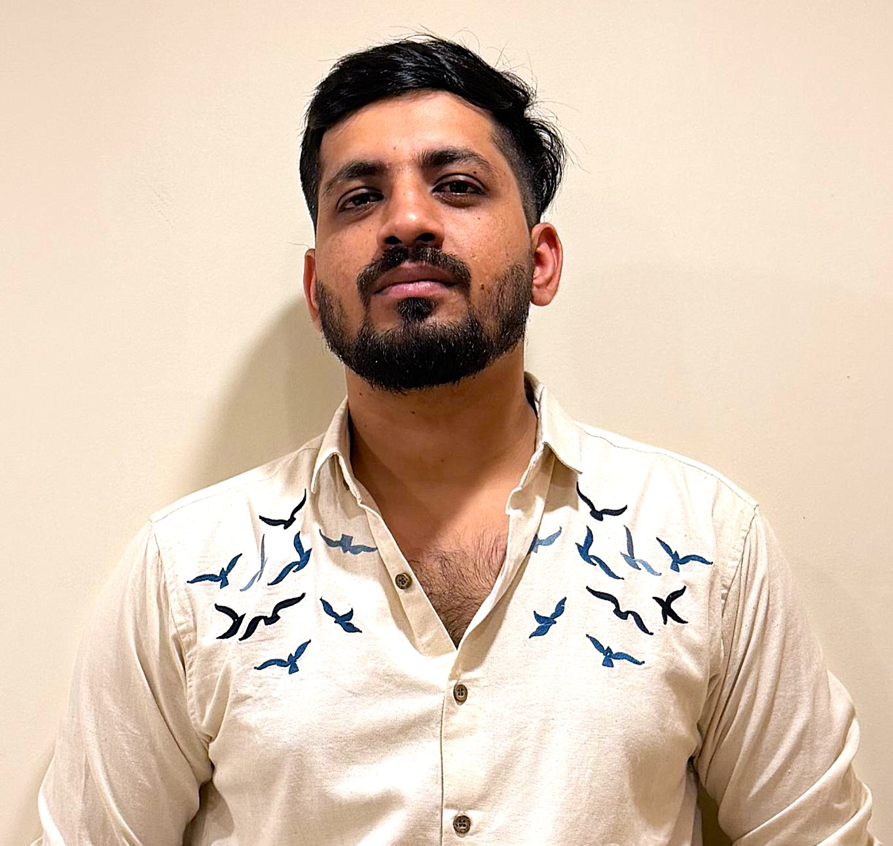

Entropy, extropy, and goodness of fit
My published work includes inference based on Burg entropy measures and a goodness-of-fit test for exponentiality based on normalized dynamic survival extropy.
Research Scholar in StatisticsIndian Institute of Technology Kharagpur
I am a research scholar in the Department of Mathematics at IIT Kharagpur, working with Dr. Nitin Gupta and Prof. Ashis SenGupta. I study statistical inference for linear and directional data, with interests in distribution theory, goodness-of-fit tests, and information measures.
I joined the Ph.D. programme in Statistics at IIT Kharagpur in July 2023. I received my M.Sc. in Mathematics from IIT Palakkad in 2022 and my B.Sc. (Hons) in Mathematics from Deshbandhu College, University of Delhi in 2018. My master's project, guided by Dr. M. Ashok Kumar, explored source coding, guessing, and task partitioning with distortion.
2 journal articles · 2 conference presentations in 2026 · 2 teaching assistantships

Presented a paper at the European Meeting of Statisticians (EMS 2026), Università della Svizzera italiana Lugano, Switzerland.
Presented a paper at the WSTA 2026, jointly organized by the International Statistics Fraternity (ISF), Indian Society for Probability and Statistics (ISPS), the Kerala Statistical Association (KSA), the Department of Statistics, University of Kerala and School of Physical and Mathematical Sciences, University of Kerala, Trivandrum, India.
New journal article: Inferences Based on Burg Entropy Measures, with Nitin Gupta, published in Stat.
Teaching assistant for Computational Statistics at IIT Kharagpur, with Dr. Nitin Gupta.
A goodness-of-fit test for testing exponentiality based on normalized dynamic survival extropy, with Nitin Gupta, published in Mathematica Slovaca.
Shortlisted for the Best Paper Presentation Award competition at WSTA 2025.
Presented a paper at the International Conference on Statistical Learning, IIT Ropar.
Presented at ICADS 2025, Vimala College, Thrissur.
My research focuses on statistical inference for linear and directional data. I am interested in how distribution theory and information measures can be used to construct and study statistical procedures, including goodness-of-fit tests.
Data and distributions
Information measures
Statistical inference
Research guidance: Dr. Nitin Gupta and Prof. Ashis SenGupta, IIT Kharagpur.
My published work includes inference based on Burg entropy measures and a goodness-of-fit test for exponentiality based on normalized dynamic survival extropy.
I am interested in statistical inference for linear and directional data, including probability distributions, skewed and extreme-value distributions, and goodness-of-fit methods.
Two journal articles. Also on Google Scholar.
Statistical inference based on Burg entropy measures.
@article{kandpal2026burg,
title = {Inferences Based on Burg Entropy Measures},
author = {Kandpal, Gaurav and Gupta, Nitin},
journal = {Stat},
volume = {15},
number = {2},
pages = {e70161},
year = {2026},
doi = {10.1002/sta4.70161}
}A test for exponentiality using normalized dynamic survival extropy.
@article{kandpal2025extropy,
title = {A goodness-of-fit test for testing exponentiality
based on normalized dynamic survival extropy},
author = {Kandpal, Gaurav and Gupta, Nitin},
journal = {Mathematica Slovaca},
volume = {75},
number = {3},
pages = {679--698},
year = {2025},
doi = {10.1515/ms-2025-0050}
}LaTeX templates from my academic toolkit.
IIT Kharagpur
A starting point for preparing a Ph.D. registration report.
Open templateIIT Kharagpur
A template for organising a research enhancement report.
Open template.tex file, add your BibTeX references to ref.bib, and compile.Department of Mathematics, IIT Kharagpur.
Probability and Statistics. Dr. Prateep Chakraborty.
Computational Statistics. Dr. Nitin Gupta.
Statistical Software Lab. Dr. Swananda Khare.
Stochastic Process and Finance. Dr. Nitin Gupta.
Mathematics teacher, JAM 2023. DIPS Academy, Jia Sarai, Delhi. October 2022–15 January 2023.
Home tutor, Classes XI and XII. Part-time, Agarwal Academy, R.K. Puram, Delhi. June 2018–December 2020.
Ph.D. in Statistics. IIT Kharagpur, West Bengal, India. Since July 2023.
M.Sc. in Mathematics. IIT Palakkad, Kerala, India. August 2020–April 2022.
B.Sc. (Hons) in Mathematics. Deshbandhu College, University of Delhi. July 2015–April 2018.
Junior Research Fellow, CSIR–EMR. 17 January–30 April 2023.
Subject Matter Expert. Evelyn Learning Private Limited. 15 May–30 October 2020.
Subject Matter Expert. Chegg Inc. India. 1 July 2018–30 April 2020.
European Meeting of Statisticians (EMS 2026). Università della Svizzera italiana Lugano, Switzerland.
International Conference on Statistical Learning (ICSL). Department of Mathematics, IIT Ropar.
International Conference on Advanced Data Analytics and Statistics (ICADS). Vimala College (Autonomous), Thrissur, in association with the Kerala Statistical Association.
Recent Trends in Statistical Theory and Applications (WSTA 2025). Tenth International Webinar, jointly organised by ISF, ISPS, KSA, and the Department of Statistics and School of Physical and Mathematical Sciences, University of Kerala.
Teaching Assistant in the workshop on Foundation of Statistics and Applications. Department of Mathematics, IIT Kharagpur.
Stochastic Processes and Applications. National Centre for Mathematics, IIT Guwahati.
How many pentagons does a football have? Departmental seminar, IIT Palakkad. Dr. Somnath Basu, IISER Kolkata.
History of Mathematics before the 16th Century. Two-day workshop, National Academy of Sciences, India (NASI), Allahabad.
Finite Fields and Galois Theory. Two-day workshop, NASI, Allahabad.
Best Paper Presentation Award competition shortlist. WSTA 2025.
A thought I carry with me.
View the original quoteकर्मण्येवाधिकारस्ते मा फलेषु कदाचन।
मा कर्मफलहेतुर्भूर्मा ते सङ्गोऽस्त्वकर्मणि॥Act with commitment, without attachment to the outcome.
Bhagavad Gita, 2.47
gauravk@kgpian.iitkgp.ac.in
01.gaurav.official@gmail.com